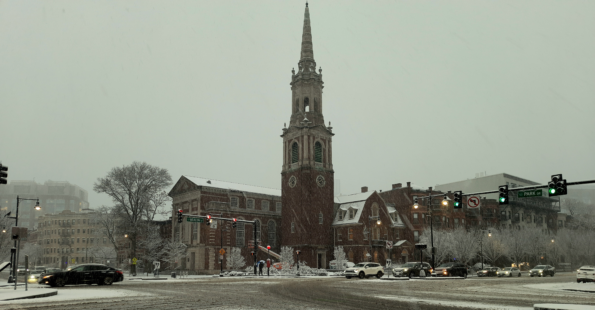
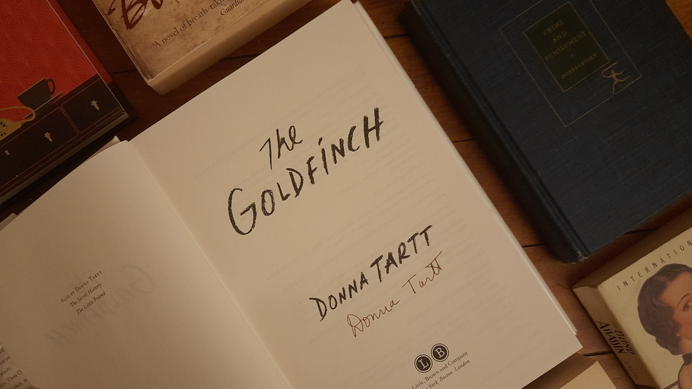
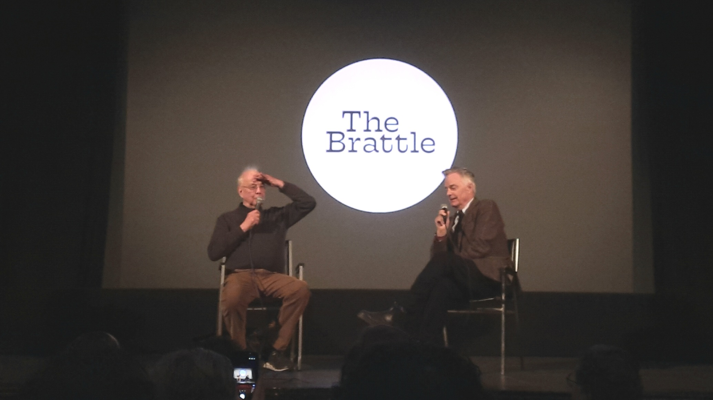
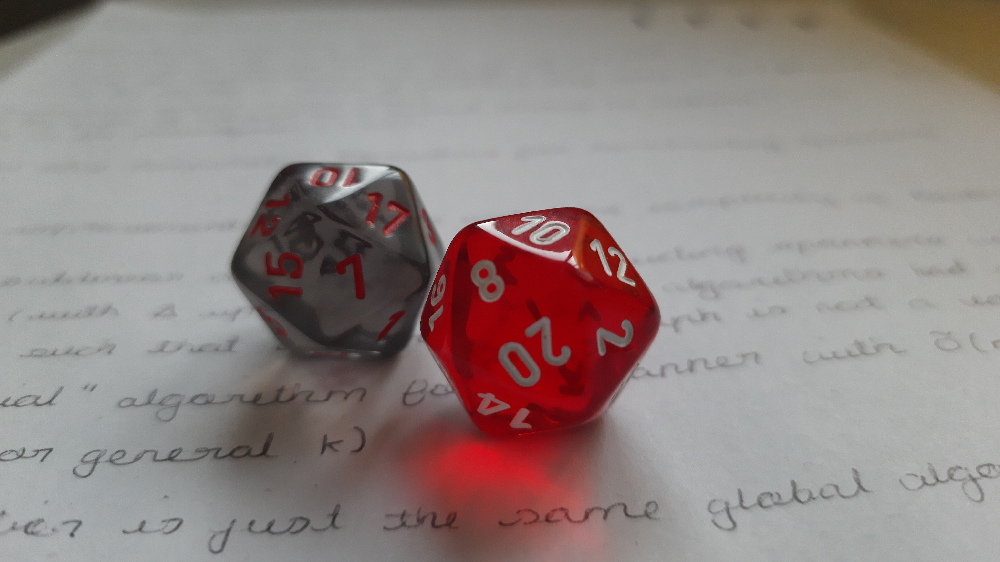
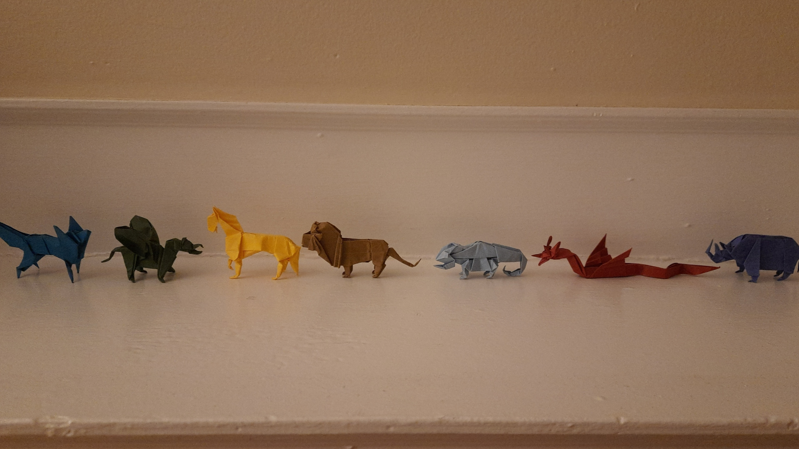

MORE

“I know I don't need one, but I'd like one very, very much please”
Travel
I was born and raised in Kolkata, after which I spent a year and a half in Chennai for my undergrad (lost half of campus life to COVID), before moving to Boston for my PhD. Outside of this, I've spent a winter in Singapore, two summers in Paris, and one autumn in Tokyo (academia is a great excuse to just go places; thank you all the wonderful people who've funded my various visits!). During all of these stints, I've travelled around quite a bit, or well, at least as much as my passport (ranked 81st on the Henley Passport Index) would permit.
Paris, is probably one of the best places to spend the summer in, while Boston's one of the easiest places to live in as an academic. I suspect living in NYC or London would also be incredibly fun, but I haven't, so I can't say for sure (what I can say is that if you are in the UK you should go to Brighton and its whereabouts). Kolkata is the cultural capital (and ex-actual-capital) of India and has amazing sweets, but is also so incredibly dirty that I cannot in good conscience recommend it. If you are planning to visit India, I'd say go to Sikkim or Rajasthan, or Kerala if you want water bodies. In Europe, Greece is probably my favourite, especially because I got to stay with my friend who's a local. The US has way too much and I've seen way too little, but the usual suspects like NYC, Yosemite, and Buc-ee's are all fantastic. The city I'm most disappointed by is San Francisco — geographically one of the best and prettiest, but I really dislike how cool Waymos are, and what they stand for. Greatest place I've ever been is Sigiriya.

▶ French Alps
View from Aiguille du Midi (3,842 m), one cable car ride away from Chamonix.
Boston
When I'm not at work, you will most likely find me walking. Sometimes not even to someplace; I just enjoy walking. And Boston's very walkable too. If you're looking for good walking routes in Boston, try the Charles River Esplanade (great for when you need to cross the river), the Emerald Necklace (ends at the Arnold Arboretum, which one should see of its own accord), the Commonwealth Avenue Mall (for when you need to go downtown), or Beacon Street (ends in the wonderful Chestnut Hill Reservoir, passes through Coolidge Corner, and is lined with pretty brownstones).
Some of my other favourite spots in Boston are The Brattle Theatre (movie projection from behind the screen!), The Coolidge Corner Theater (oldest theatre in Boston), any bb.q chicken outlet (except maybe the Allston one, not a fan of Allston), Tasty Burger (Official Burger of the Boston Red Sox), Mount Auburn Cemetery (Boston's response to Père Lachaise), the Boston MFA (they've got a Dutch dollhouse, only five originals are preserved from the 17th century), and the Harborwalk (this one just because I think it's really cool to walk along the Atlantic coast). Feel free to reach out if you're in town and looking for things to do and places to go.

▶ Beacon Street
Audubon Circle, winter 2024. Boston will occasionally get good snowfall; perfect for sledging!
Sports
If you are looking for someone to go hiking or bouldering with at a conference, I am always down. Occasionally I play football or badminton as well, but I'm not as regular as I used to be and would like to be. I watch sports too. So if you want to talk about how inverted fullbacks are ruining the creativity of Premiership football (this guy's an even better option for this conversation), how Djokovic is part of two Big Threes, how powerplay works in cricket, or want to explain baseball statistics to someone, I will gladly oblige.

▶ Stamford Bridge
Matchday, January 20, 2025. Chelsea (3) - Wolves (1). One of my biggest bucket list items.
Books
I strictly read works of fiction. There's not really an overarching theme to what kind, but if you squint hard enough, you might see a slight bias towards fantasy and historical fiction.
- A recent novel that I really like is Babel.
- A slightly older novel that I really like is After Dark.
- A much older novel that I really like is The Master and Margarita.
- A much, much older novel that I really like is Anna Karenina.
- An ancient novel that I really like is Mahabharata.
If you like owls, you can check out the Guardians of Ga'Hoole books. If you like Victorian-era thrillers, you can check out the Sally Lockhart books.
I'm also looking to collect books from bookstores that have their own stamps. For example, Shakespeare and Company and the Strand Bookstore do. If you know of other such bookstores, please let me know.

▶ The Goldfinch
A modern classic. Donna Tartt's signature made possible by Naman.
Movies
I watch way too many movies. I will watch just about anything, ranging from hyper-niche screenings at the Harvard Film Archive to obviously terrible movies that no one will agree to go for, or even live performances such as Manual Cinema.
- Check out the oldest feature-length animated movie ever made — The Adventures of Prince Achmed (1926).
- Check out the most influential animated movie ever made — Akira.
- Check out the most consistent movie franchise ever made — Mission Impossible.
- Check out a movie made in my native language — Goopy Gyne Bagha Byne (গুপী গাইন বাঘা বাইন).
- Check out a random artsy trilogy made by a Polish dude — Three Colours.
I take a lot of interest in visual effects in movies as well; you can check out Corridor Crew if you're curious about this.

▶ Whit Stillman (right)
The Brattle, December 17, 2025, following a screening of The Metropolitan.
Board Games
I like card games, because they strike a perfect balance of "universal enough that you can play reasonably well after a few hands" and "unique enough that each game still feels different" (also, they are randomised). Here is a great resource if you're looking for a new card game to play. Depending on your inexperience-level, I can show you a few card tricks as well.
I (mostly) know the rules of Mahjong, but that doesn't mean I play well or anything. A more recent board game that I enjoy is Splendor. I play other board games as well, but with no level of consistency. Crucially, don't ask me to play chess — I am both terrible at it and don't much care for it personally by virtue of the game being deterministic. If you want to play bridge, on the other hand, please do ask me — I haven't played in very long and am starved for it. If you want to gamble, Blackjack is one game where you can win in expectation (although you'll have to count cards).

▶ 2d20
My first set of dice, featuring an IRIF notebook and local algorithms for graph spanners.
Miscellaneous
I used to do origami as a kid, and have recently revived this hobby. At present, my futile search for good origami sheets in the US continues (I am taking suggestions).
My futile search for something like Mushishi also continues, although I have stopped actively looking. The closest I've come is Kwaidan (both the book and the movie), but if you have other recommendations, I'm all ears.
A long time ago, I used to do some game development and play videogames, but I haven't touched these in years. The last game I played was Blasphemous II, although I really want to try Silksong and Forza Horizon 6 at some point. My most-played games ever (which is not a high bar) are probably Hollow Knight and Brawlhalla.

▶ Mantelpiece
Some of the models I've folded since 2025. All of these are designed by John Montroll, except the fox, which is by Robert Lang.